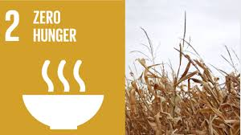

Zero Hunger
Goal 2 is about creating a world free of hunger by 2030. The global issue of hunger and food insecurity has shown an alarming increase since 2015, a trend exacerbated by a combination of factors including the pandemic, conflict, climate change, and deepening inequalities. By 2023, nearly 1 in 11 people worldwide faced hunger while more than 2 billion experienced moderate to severe food insecurity. Global hunger levels, measured by the prevalence of undernourishment, remained at the same level for three consecutive years after a sharp rise during the pandemic. This data underscores the severity of the situation, revealing a growing crisis. In addition, an estimated 2.33 billion people faced moderate to severe food insecurity in 2023. This classification signifies their lack of access to sufficient nourishment. This number escalated by an alarming 383 million people compared to 2019. The persistent surge in hunger and food insecurity, fueled by a complex interplay of factors, demands immediate attention and coordinated global efforts to alleviate this critical humanitarian challenge. Extreme hunger and malnutrition remain a barrier to sustainable development and creates a trap from which people cannot easily escape. Hunger and malnutrition mean less productive individuals, who are more prone to disease and thus often unable to earn more and improve their livelihoods. 2 billion people in the world do not have regular access to safe, nutritious and sufficient food. In 2024, 23.2 per cent of children had stunted growth and 6.6 per cent of children under the age of 5 were affected by wasting. How many people are hungry? It is projected that more than 600 million people worldwide will be facing hunger in 2030, highlighting the immense challenge of achieving the zero hunger target. People experiencing moderate food insecurity are typically unable to eat a healthy, balanced diet on a regular basis because of income or other resource constraints. Why are there so many hungry people? Shockingly, the world is back at hunger levels not seen since 2005, and food prices remain higher in more countries than in the period 2015–2019. Along with conflict, climate shocks, and rising cost of living, civil insecurity and declining food production have all contributed to food scarcity and high food prices. Investment in the agriculture sector is critical for reducing hunger and poverty, improving food security, creating employment and building resilience to disasters and shocks.